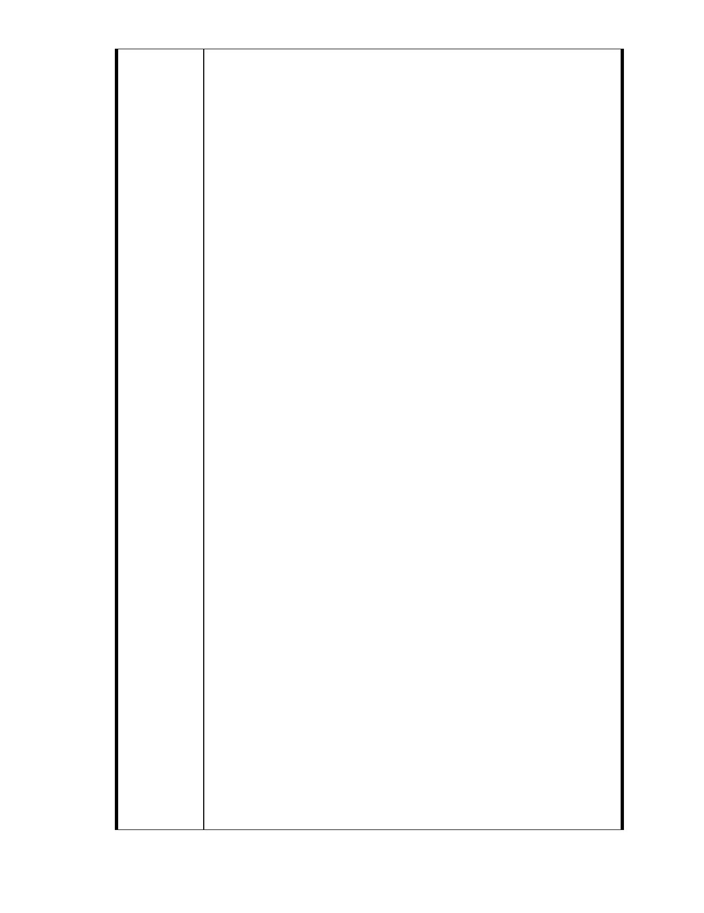

81.林欣怡 michelle lin
我愛內湖
請大家一起來捍衛內湖這塊最後的保護區
我要說
“慈濟” 請你們尊重自然資源維護的重要性！！！！
滾出大湖保護區去吧！！！ ～～乾溫～～
82.張雅茹
請常做好事的慈濟....好心放了這塊土地吧
83.劉新惠 Jenny Liu
反對慈濟將內湖保護區變更開發！慈濟大可另覓更適合的土地去蓋大
樓，為什麼非要讓周邊居民活在擔心害怕的惡夢中？
84.王廷 Ted
生態保育，人人有責!
85.周龍祺 Hector
save our environment
86.張正旻
慈濟不是應該以慈悲為懷嗎?
把生態破壞，造成傷害，再行救濟功德嗎?
不是反對蘇花高嗎? 那為何自己可以肆意所為咧！
87.劉道論
反對慈濟將內湖保護區開發！
支持將該地規劃為水保公園！
88.黃終憾 C.H.HUANG
證嚴法師怎麼了?為何放任慈濟人行此不義之事.
89.李承叡
慈濟不是公益團體嗎
要是做出這樣的事情
那還有資格叫做慈濟嗎 ?
90.吳曉慧 roxy
林建元學長
- 213 -